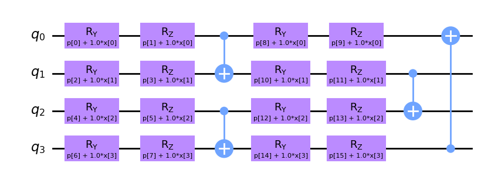
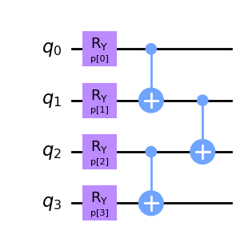
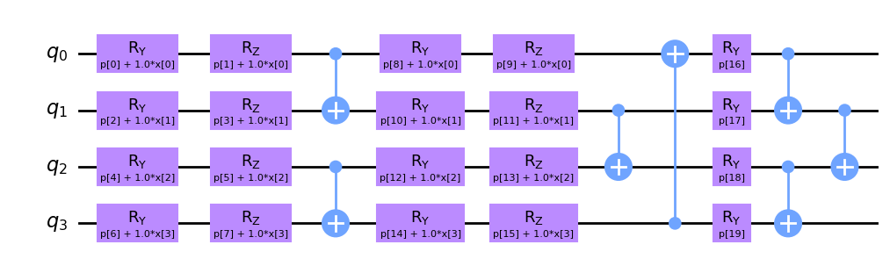
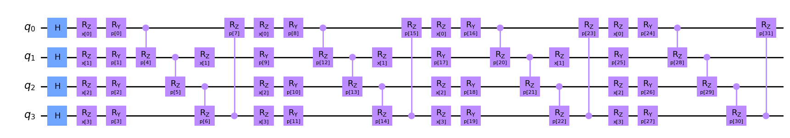

import numpy as np
from sklearn.datasets import load_iris
iris = load_iris()
X_idx = np.where(iris.target > 0)
X = iris.data[X_idx]
Y = iris.target[X_idx]2 Quantum Neural Networks
We already know that there could be blocks encoding our data (feature maps), blocks containing free parameters (ansatz) and how those parameters can be trained. Let’s see if we can work out a full example.
from sklearn.preprocessing import MinMaxScaler
scaler = MinMaxScaler()
X_scaled = scaler.fit_transform(X)from sklearn.model_selection import train_test_split
features = X_scaled.shape[1]
X_train, X_test, y_train, y_test = train_test_split(X_scaled, Y, test_size=0.33, random_state=42)Done! Now we can start creating out QNN structure. First we need something to embed the data into a quantum state.
from squlearn.encoding_circuit import YZ_CX_EncodingCircuit
feature_map = YZ_CX_EncodingCircuit(num_qubits = features, num_features = features, num_layers = 2)
feature_map.draw("mpl", style="clifford")
Now we will select a fully parameterized circuit (no data embedded).
from squlearn.encoding_circuit import LayeredEncodingCircuit
from squlearn.encoding_circuit.layered_encoding_circuit import Layer
# Template
ansatz = LayeredEncodingCircuit(num_qubits=features, num_features=features)
# Create the layer
layer = Layer(ansatz)
layer.Ry("p")
layer.cx_entangling("NN") # Entangling block
ansatz.add_layer(layer,num_layers=1)
ansatz.draw("mpl", style="clifford")
Now we have composed the \(U_{\theta_1}(x)\) feature map and \(V(\theta_2)\) parameterized circuit that produce the state \(|\Psi(x, \theta)\rangle\). By measuring the observable \(O\) we can then evaluate the put of the QNN structure as
\[ f(x,\theta) = \langle \Psi(x, \theta) | O |\Psi(x, \theta)\rangle \]
qnn_structure = feature_map + ansatz
qnn_structure.draw('mpl', style="clifford")
A single \(Z\) observable over a specific qubit may do the trick. At the end, we know it will return either 1 or -1 so we are fine for binary classiciation tasks.
from squlearn.observables import CustomObservable
observable = CustomObservable(num_qubits=features, operator_string="IIIZ",parameterized=True)
print(observable)SparsePauliOp(['IIIZ'],
coeffs=[ParameterExpression(1.0*p[0])])And with that we just neet to select our simulation mechanism and optimization routine to start training our model.
from squlearn.qnn import QNNClassifier, SquaredLoss
from squlearn.optimizers import Adam
from squlearn import Executor
qnn = QNNClassifier(qnn_structure, observable, Executor("statevector_simulator"), SquaredLoss(), Adam())
qnn.fit(X_train, y_train)fit: 100%|██████████| 100/100 [17:03<00:00, 10.23s/it]from sklearn.metrics import classification_report
y_pred = qnn.predict(X_test)
print(classification_report(y_test, y_pred)) precision recall f1-score support
1 0.82 0.74 0.78 19
2 0.69 0.79 0.73 14
accuracy 0.76 33
macro avg 0.76 0.76 0.76 33
weighted avg 0.77 0.76 0.76 33
Cool! You can check other compositions, like the Data Re-Uploading one or othes used in different benchmarks in the literature (Pérez-Salinas et al. 2020; Bowles, Ahmed, and Schuld 2024).
from squlearn.encoding_circuit import HubregtsenEncodingCircuit
full_pqc = HubregtsenEncodingCircuit(num_qubits = features, num_features = features, num_layers = 4)
full_pqc.draw("mpl", style="clifford")
qnn = QNNClassifier(full_pqc, observable, Executor("statevector_simulator"), SquaredLoss(), Adam())
qnn.fit(X_train, y_train)
y_pred = qnn.predict(X_test)
print(classification_report(y_test, y_pred))fit: 100%|██████████| 100/100 [04:37<00:00, 2.77s/it]
precision recall f1-score support
1 0.94 0.84 0.89 19
2 0.81 0.93 0.87 14
accuracy 0.88 33
macro avg 0.88 0.89 0.88 33
weighted avg 0.89 0.88 0.88 33